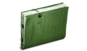
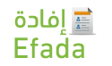

|
 | Registration |
|
|
|||
|
|
Home |
Electronic Service |
Health Awareness |
Heath Tools |
Contact US |
Video |
Medical Licenses Which include services of facilities inquiries and licensed persons. These services enable the search of medical licenses of facilities, personnel and their information. It also allows searching for people licensed for health facility, and querying about Travel Ban, Profession Ban and medical licenses infringement | |
Tenders System - Riyadh This service gives information about the tenders of MOH and other related facilities. It helps the user to be acquainted of the tender's information | |
|  | Transactions Inquiry Service The aim of this service is helping reviewers who deal with MOH to check the status of their transactions that they have submitted online via E-portal of the Ministry of Health.. |
 | Payment Orders Inquiry Service The payment Order Inquiry Service is an external service provided by the Ministry for the companies contracted with the Ministry |
|  | “Efada” Enquiry Service Proceeding from its keenness on the constant development of its e-services, as well as meeting the needs of beneficiaries of these services; the Ministry of Health (MOH) is hereby announcing the launch of “Efada” Enquiry Service |